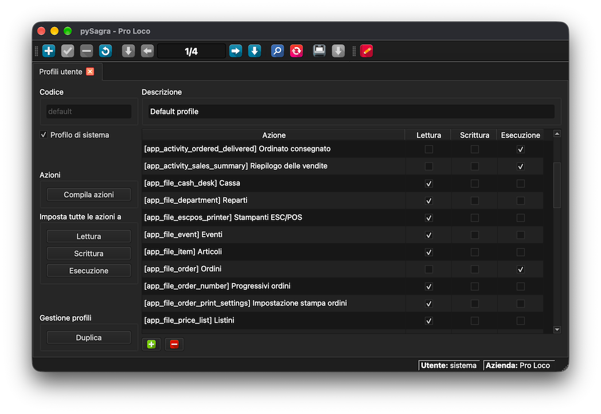

Profili utente
Un profilo è un insieme di diritti sulle funzioni del programma; a ogni utente e per ogni azienda, si assegna un profilo specifico.

I profili sono caratterizzati da queste impostazioni:
- Codice: codice alfanumerico del profilo, si assegna alla creazione e non può essere modificato.
- Descrizione: descrizione del profilo, sempre modificabile.
- Profilo di sistema: se spuntata il profilo non si può modificare né cancellare.
- Azione: identifica una funzione del programma alla quale assegnare dei diritti.
- Lettura: consente di visualizzare un archivio con accesso in sola lettura.
- Scrittura: consente di modificare un archivio con accesso in lettura e scrittura.
- Esecuzione: consente di eseguire operazioni es. inserire ordini, modificare parametri, eseguire gli strumenti, non riguarda gli archivi ma le operazioni che si possono svolgere all'interno del programma.
I tasti a sinistra:
- Compila azioni: aggiunge le azioni che mancano nel profilo.
- Imposta tutte le azioni a: assegna a tutte le azioni gli stessi diritti di lettura o scrittura o esecuzione.
- Duplica: consente di creare un nuovo profilo duplicandone uno esistente.
Per creare un nuovo profilo conviene compilare tutte le azioni, impostarle ad un valore predefinito di lettura e quindi modificare quelle che richiedono un permesso diverso. Se un'azione non è valorizzata non ha nessun diritto, ` equivalente a non spuntare tutti e tre i permessi di lettura/scrittura/esecuzione.
Se serve modificare un profilo di sistema è necessario farne una copia con il Duplica e poi modificarlo.
Inizio pagina